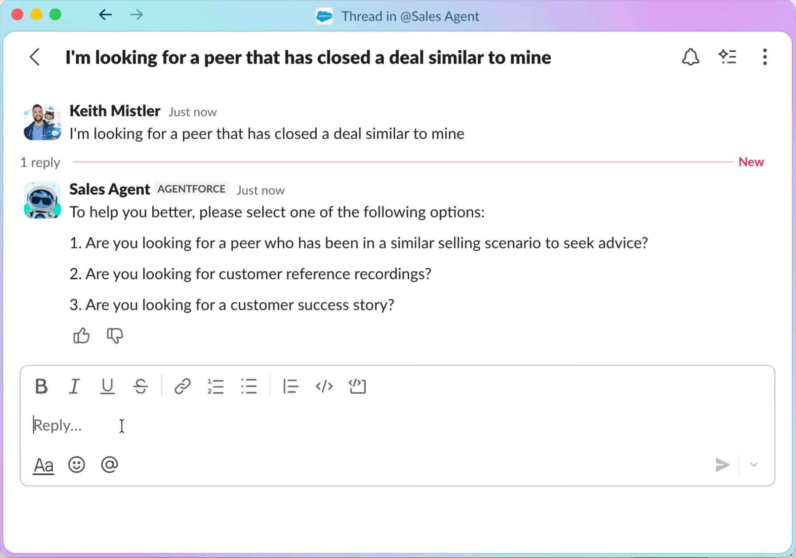

An AI agent that finds the rep who already won your deal
Phone a Friend is a Sales Agent skill in Agentforce. A seller describes the deal they're working on, and the agent finds peers who closed similar deals, or customers who can serve as references.

The best deal knowledge was stuck in people's heads.
Top reps knew how to win against tough competitors. But that knowledge lived in Slack threads, DMs, and calls nobody recorded. If you didn't already know who to ask, you were out of luck.
Sellers filed about 600 Deal Support Requests in a single year looking for help. The Customer Reference team handled 4,540 reference requests in FY25. Routing all of that by hand couldn't scale.
Up to six great matches, right in Slack.
The agent looks at the seller's open opportunity (product, industry, region, and segment) and returns up to six relevant matches. It covers two use cases:
Peer Support
Connects sellers with internal reps who closed similar deals, so they can get real advice fast.
Customer References
Finds customers with strong license use and a matching product footprint who can vouch for Salesforce.

Designing the conversation, not just the screens.
I joined mid-project. Before my first scoping call, I read the full business requirements doc so I could contribute right away. From there, I owned UX design and testing for the new skill.
Wrote the UX brief
Co-authored the brief that defined the problem, the audience, and the open questions: opt-out flow, data reliability, feedback loops, and phasing.
Mapped the dialogue
Designed the conversation flows, so sellers could get from question to match in as few turns as possible.
Pulled in experts
Consulted Salesforce's agentic design experts to pressure-test patterns for human-agent interaction.
Tested with sellers
Ran feedback sessions with AEs across AMER, EMEA, and LATAM, from SMB to Strategic, and stayed through V1 testing.
Three design principles
Efficiency
Get to a useful answer fast.
Accuracy
Only show matches sellers can trust.
Clarity
Make it obvious what the agent is doing.
Launched company-wide.
V1 Peer Support launched to sellers across the company and was called "a huge win for our Sales teams" in Salesforce's internal storytelling channel. The Customer Reference flow is the next milestone.
This project also changed how I design. I went from designing tools for users to designing the interaction between a seller and an AI agent.
The best AI products? You don't even think about the AI. It just works.
Good AI product design isn't about showing off the technology. It's about solving a real human problem in a way that feels natural.